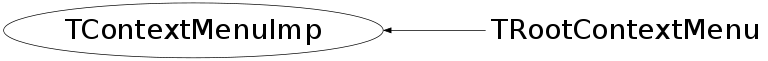

class TContextMenuImp
TContextMenuImp This class provides an interface to GUI independent context sensitive popup menus.
Function Members (Methods)
public:
| TContextMenuImp(TContextMenu* c = 0) | |
| virtual | ~TContextMenuImp() |
| static TClass* | Class() |
| virtual void | Dialog(TObject* object, TFunction* function) |
| virtual void | Dialog(TObject* object, TMethod* method) |
| virtual void | DisplayPopup(Int_t x, Int_t y) |
| virtual TContextMenu* | GetContextMenu() const |
| virtual TClass* | IsA() const |
| virtual void | ShowMembers(TMemberInspector& insp) |
| virtual void | Streamer(TBuffer& b) |
| void | StreamerNVirtual(TBuffer& b) |
protected:
| TContextMenuImp(const TContextMenuImp& cmi) | |
| TContextMenuImp& | operator=(const TContextMenuImp& cmi) |
Data Members
protected:
| TContextMenu* | fContextMenu | TContextMenu associated with this implementation |
Class Charts
{kind=link}
{kind=link}
{kind=link}
{kind=link}

Function documentation
TContextMenuImp& operator=(const TContextMenuImp& cmi)